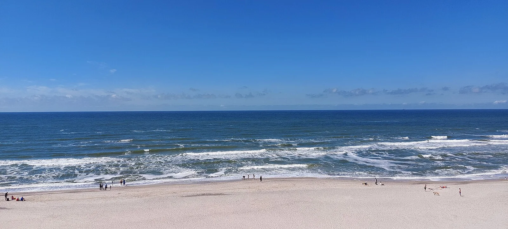

Hvide Sande
Ringkøbing Fjord, Jutland, Danemark · kitesurf, windsurf, surf

Petit port de pêche posé sur le cordon de dunes entre la mer du Nord et le fjord de Ringkøbing. Côté fjord, l’eau plate et peu profonde convient à l’apprentissage du kite et du windsurf ; côté mer, vagues et vent pour les confirmés.
- Lieu
- Ringkøbing Fjord, Jutland, Danemark
- Niveau
- Variable selon les conditions
- Activités
- kitesurf, windsurf, surf
- Type d'eau
- Mer / océan
- Coordonnées
- 56.00, 8.13 (position approximative du secteur)
Dangers à connaître
- Courant très fort dans le chenal et près des jetées du port : ne t’en approche pas.
- Vent souvent soutenu et rafaleux côté mer du Nord.
Le conseil d'Ocean Buddy
Débute côté fjord avec une école et garde la mer du Nord pour les jours où tu maîtrises le retour au vent.
Ouvrir dans Ocean Buddy Télécharger sur l'App Store
Source : Fiche Ocean Buddy · septembre 2026 · à vérifier localement.